|
|
|
Each of the exported data types that SNPduoWeb supports have slightly different formats. SNPduoWeb has been designed to handle the differences in these formats, but the data must be exported in a way SNPduoWeb can understand. Please select a tutorial to learn how to export data and run SNPduo.
Jump to a tutorial
Affymetrix CNAT 4.0 Data Export
Illumina BeadStudio Data Export
HapMap Downloaded Data Export
Custom Data Formats
Running SNPduo
Tips and Hints
Affymetrix CNAT 4.0 Data
Affymetrix data files are typically analyzed using the GeneChip Genotyping Analysis Software. This tutorial was written based on version 4.1.0.26, but should be applicable to older versions as well.
1. Open the Affymetrix GType software
2. In the data source panel choose "Analysis Results"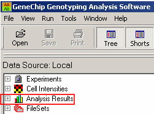
3. Double click on the appropriate "*.chp" files for the individuals you wish to analyze
4. Several columns are displayed for the data you have chosen. SNPduoWeb will run faster if less extraneous data is displayed. Right click in the column headers for data other than Chromosome, Physical Position, and the genotype calls for the individuals of interest, and click the "Hide Column" option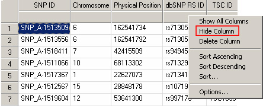
5. Click the Export button from the toolbar
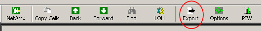
6. Choose an appropriate file name and save location. Be sure the "Export All" option is clicked and export the data
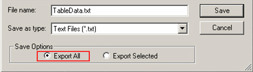
7. Proceed with using the SNPduoWeb tool as described below
Illumina - BeadStudio
For SNPs genotyped using Illumina data the standard analysis software is BeadStudio. This portion of the tutorial will cover how to export data from BeadStudio for use with SNPduo.
1. Open your data file (typically *.bsc) with BeadStudio
2. Make sure you are in the Full Data Table
3. Using the Column Chooser be sure you have at least the following selected: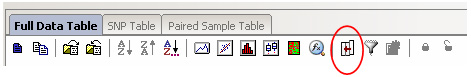
From "Displayed Columns" show
- Chr
- Position
- The individuals of interest
From "Displayed Subcolumns" show
- GType
4. Press the "Export Displayed Data to File" Button. Choose a save location and name. Export the data
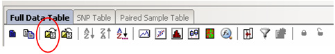
5. SNPduoWeb labels plots based on the column headers for the two compared individuals. To adjust the headers on a BeadStudio file open the exported file in a text editor. Change the genotype headers to whatever you wish to be displayed in the title of each individual's genotype plot and the overall title.
Note: Genotype columns of data exported from BeadStudio end in ".GType". This trailing ".GType" is automatically removed by SNPduo.
6. Proceed with using the SNPduoWeb tool as described below
HapMap - Downloaded Data
SNPduoWeb can analyze data downloaded from the HapMap site. These data are very high density, and therefore have large files. The HapMap data should be run on a per chromosome basis. This portion of the tutorial will cover how to download HapMap data for use with SNPduo.
1. First go to the Downloads page at the International HapMap Project website
2. Click the "Genotypes" link from Bulk Data listing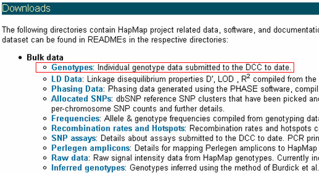
3. Pick the directory of the latest data for the build you wish to use
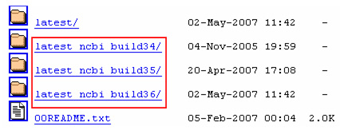
4. Pick the "non-redundant" folder of SNP data (you may or may not have to choose a strand first)
5. You should now see a list of files for each chromosome in each population. Select the chromosome and population you are interested in and click to download the file. The download will be a gzipped text file. On Linux and Mac systems the shell command "gunzip filename" should extract the text file from the archive. On Windows utility such as WinZip or WinRAR can extract the text file from the archive.
6. Proceed with using the SNPduoWeb tool as described below
Custom Data Format
The "Custom" data format allows for the analysis of data from any source, provided it follows the appropriate guidelines.
1. Chromosome column must have the name "Chromosome"
2. Physical Position column must have the name "Physical Position" or "Physical.Position"
3. Lines that should be skipped must start with a "#" character
4. Lines containing only whitespace (tabs, spaces, newline characters) are skipped
5. The only limitation on the number of SNPs is the maximum filesize upload limit
To use the Custom format be sure to select "Custom" from the SNPduoWeb Data Type dropdown list. Detailed instructions for running SNPduoWeb are provided below.
top
Running SNPduo
The previous sections of this tutorial describe how to properly export data for use with SNPduo. This section will cover the use of the tool itself.
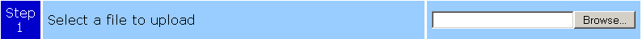
The first step in using SNPduoWeb is to specify the file you want to analyze. By following the previous tutorials you should have a file exported in the proper format for your data type. Use the "Browse" button to locate this file.
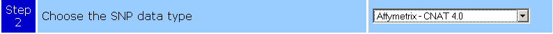
The second step is to select the source of your data. Choose one of the options in the drop-down box. For custom formatted data be sure you have followed the rules described previously for formatting this type of input.
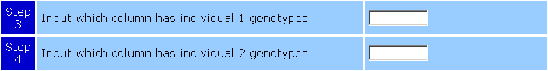
The third and fourth steps tell SNPduoWeb where the genotype data is located. The order of who is individual one and who is individual two is not important. In each box enter the number of the column where the genotype data is located. For instance, if the headers of your input were "Chromosome Physical Position Individual 1 Individual 2", you would enter 3 and 4 in the box for individual 1 and individual 2, respectively.
Step five specifies the chromosome of interest. There are several ways to proceed with this option.
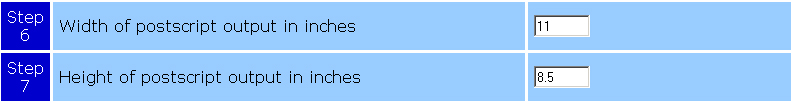
Steps six and seven allow you to specify the size of the postscript file the program generates. The default is standard letter size. Postscripts are landscape format so the width should be the widest dimension. Common paper sizes in inches are listed below:
| Letter | 8.5x11 |
| Legal | 8.5x14 |
| Government Letter | 8.5x10.5 |
| Government Legal | 8.5x13 |
| Ledger | 11x17 |
The positions and extent of centromeres, telomeres, and other heterochromatin can change between genome builds. Step 8 allows you to specify which build the data is based on so the ideogram for that build is displayed correctly. Affymetrix CNAT 4.0 will be based on Build 35. Illumina BeadStudio data is based on Build 35. If you are using HapMap, select the build appropriate for the data that you downloaded. Custom data could be any build, and the user is responsible for deciding which to use.
In step 9 you can specify whether the software should generate JPEG files of your data. The default is to create JPEGs. These JPEG files will displayed in your web browser and will be available for download. The advantage of making JPEGs is to be able to see the data in the browser without having to download the postscript and open it in a vector graphics program. The disadvantage is that making an JPEG from a postscript is a slow process and may significantly slow down the performance of the program.
SNPduoWeb can be run to analyze a single pair in Normal Mode or all comparisons for a list of individuals in Batch Mode. The default mode in step 10 is Normal Mode. If you wish to run all comparisons for several individuals, select Batch Mode. Then specify the columns of the individuals you wish to compare in the "Individual 1" box, separated by commas. For example, if you want to perform all comparisons between columns 4-6, enter "4,5,6" in the Individual 1 box. Individual 2 can be left blank (and any input there will be ignored in Batch Mode).
The final step in running SNPduoWeb is to double check the form choices you have made and to submit the data. Pressing the submit button uploads your input file to the SNPduoWeb server and triggers the supporting scripts to analyze the data using the parameters you chose. After processing a new page will display, showing a jpeg version of your IBS plot, along with links to the summary file, wig file for the UCSC Genome Browswer, jpeg image, postscript file, and a zip file containing all of the previous in one file.
Tips and Hints
SNPduoWeb is designed to ignore lines that start with a # character (commented lines). Any line that contains this character is automatically ignored. Also, in any context OTHER than commenting out a line the # sign is a forbidden character and will automatically be replaced by alternative characters.
If you need to manually edit any header information of large text files on a Windows PC, we suggest using a more advanced text/code editor than notepad, such as Crimson Editor or Notepad++. Mac and Linux text editors such as vi, emacs, and xemacs can usually open and manipulate large files with little problem.
If performing a "Genome" plot, it may be useful to keep the height at approximately normal landscape page size (approximately 8.5") and set the width to very long (for example 50). This will spread the plot out enough to more easily see patterns in your data.
The platform specific plotting functions are designed to work if you follow the steps outlined in this tutorial. If the data is not obtained by following those steps it should be considered Custom Data and formatted in an appropriate manner.
top
| Back | Return to the SNPduoWeb homepage |
| Home | Return to the Pevsner Lab Homepage |